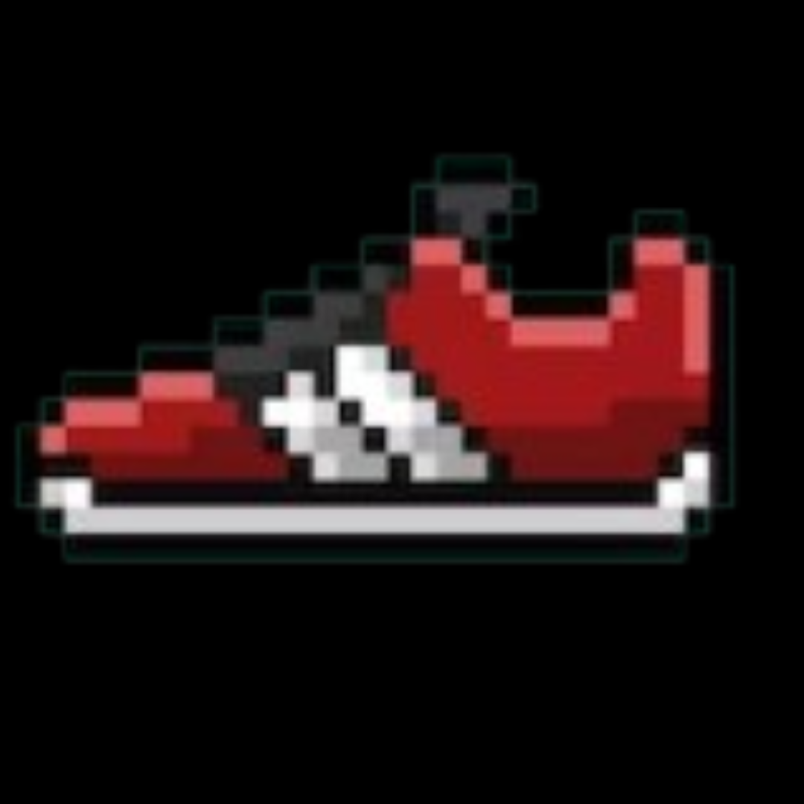
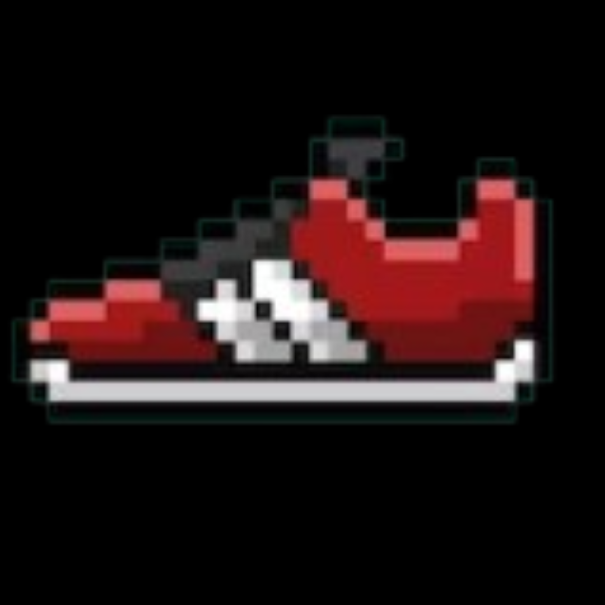

Tênis Superstar
Para pés mais finos, recomendamos que compre um tamanho menor do que o de costume. Se este item for personalizado, não se aplica à nossa política de troca e devolução. * A personalização deste artigo está indiponível no momento.

Tênis Old Skool Black White
Tênis de cano baixo com sidestripe original da Vans;Fechamento com cadarço; Cabedal resistente em camurça e lona;Colarinhos acolchoados; Solado emborrachado em waffle exclusivo Vans

Tênis Nike Star Runner 2 Infantil
Este é um card maior com suporte a texto embaixo, que funciona como uma introdução a um conteúdo adicional. Este card tem o conteúdo ainda maior que o primeiro, para mostrar a altura igual, em ação.

Tênis Air Jordan 1 Mid SE Masculino
Um AJ1 com atitude? Demorou! Jeans escuro e couro nobuck aveludado conferem ousadia a este par edição especial. Neutros o suficiente para ancorar qualquer estilo, eles trazem um estilo confiante a cada passo.

Chinelo Nike Victori One Feminino
Da praia à jardinagem ou relaxando no sofá, o Nike Victori One aperfeiçoa um design clássico. Oferecendo conforto com leveza e praticidade, ele apresenta uma nova espuma, mais macia e mais ágil. O padrão de pegada anatômico ajuda a apoiar e manter o pé no lugar.

Tênis Nike SB Nyjah 3 Masculino
Leve. Sem Esforço. Perfeito. O Nyjah 3 oferece a próxima iteração do tênis de skate que é tão extraordinário quando Nyjah. A tecnologia Flyplate (uma placa no mediopé ajustada para atender às demandas da patinação) combina com um solado de favo de mel que é aderente e leve.

 
